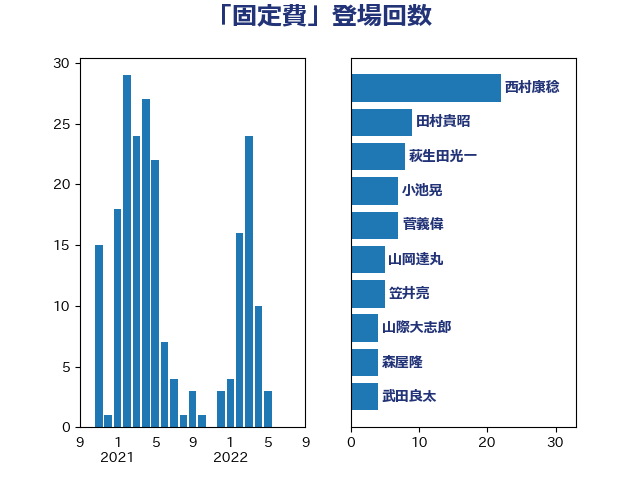

単語「固定費」

| 西村康稔 | 自由民主党 | 22 回 |
| 田村貴昭 | 日本共産党 | 9 回 |
| 萩生田光一 | 自由民主党 | 8 回 |
| 小池晃 | 日本共産党 | 7 回 |
| 菅義偉 | 自由民主党 | 7 回 |
| 山岡達丸 | 立憲民主党 | 5 回 |
| 笠井亮 | 日本共産党 | 5 回 |
| 山際大志郎 | 自由民主党 | 4 回 |
| 森屋隆 | 立憲民主党 | 4 回 |
| 武田良太 | 自由民主党 | 4 回 |
| 吉川赳 | 無所属 | 3 回 |
| 岸田文雄 | 自由民主党 | 3 回 |
| 梶山弘志 | 自由民主党 | 3 回 |
| 江島潔 | 自由民主党 | 3 回 |
| 落合貴之 | 立憲民主党 | 3 回 |
| 近藤和也 | 立憲民主党 | 3 回 |
| 中司宏 | 日本維新の会 | 2 回 |
| 坂本哲志 | 自由民主党 | 2 回 |
| 斉藤鉄夫 | 公明党 | 2 回 |
| 浅野哲 | 国民民主党 | 2 回 |
| 玉木雄一郎 | 国民民主党 | 2 回 |
| 田村まみ | 国民民主党 | 2 回 |
| 礒崎哲史 | 国民民主党 | 2 回 |
| 稲富修二 | 立憲民主党 | 2 回 |
| 芳賀道也 | 国民民主党 | 2 回 |
| 西田昌司 | 自由民主党 | 2 回 |
| 赤澤亮正 | 自由民主党 | 2 回 |
| 階猛 | 立憲民主党 | 2 回 |
| 佐藤啓 | 自由民主党 | 1 回 |
| 倉林明子 | 日本共産党 | 1 回 |
| 前原誠司 | 国民民主党 | 1 回 |
| 北村経夫 | 自由民主党 | 1 回 |
| 北神圭朗 | 無所属 | 1 回 |
| 古川元久 | 国民民主党 | 1 回 |
| 古賀友一郎 | 自由民主党 | 1 回 |
| 吉良よし子 | 日本共産党 | 1 回 |
| 塩川鉄也 | 日本共産党 | 1 回 |
| 大島敦 | 立憲民主党 | 1 回 |
| 大西英男 | 自由民主党 | 1 回 |
| 小宮山泰子 | 立憲民主党 | 1 回 |
| 後藤祐一 | 立憲民主党 | 1 回 |
| 早稲田ゆき | 立憲民主党 | 1 回 |
| 杉久武 | 公明党 | 1 回 |
| 柚木道義 | 立憲民主党 | 1 回 |
| 櫻井充 | 自由民主党 | 1 回 |
| 武井俊輔 | 自由民主党 | 1 回 |
| 浜野喜史 | 国民民主党 | 1 回 |
| 浮島智子 | 公明党 | 1 回 |
| 牧義夫 | 立憲民主党 | 1 回 |
| 田村憲久 | 自由民主党 | 1 回 |
| 矢倉克夫 | 公明党 | 1 回 |
| 穂坂泰 | 自由民主党 | 1 回 |
| 藤木眞也 | 自由民主党 | 1 回 |
| 藤田文武 | 日本維新の会 | 1 回 |
| 赤羽一嘉 | 公明党 | 1 回 |
| 越智隆雄 | 自由民主党 | 1 回 |
| 足立康史 | 日本維新の会 | 1 回 |
| 逢坂誠二 | 立憲民主党 | 1 回 |